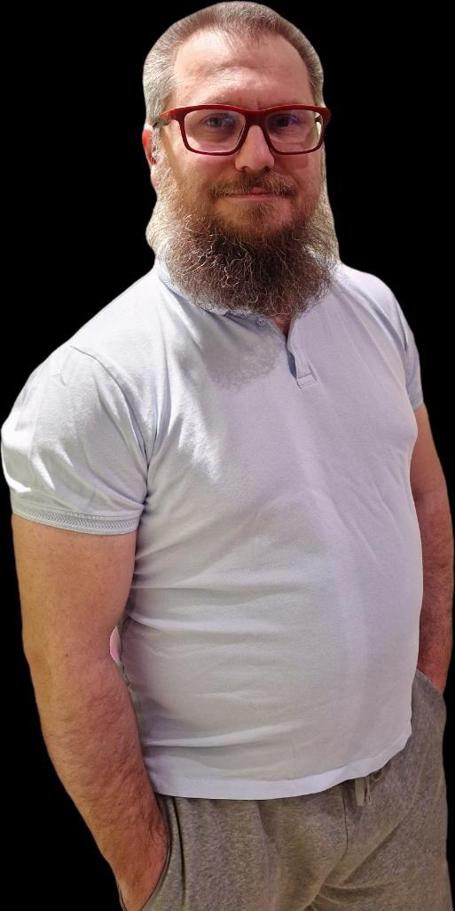
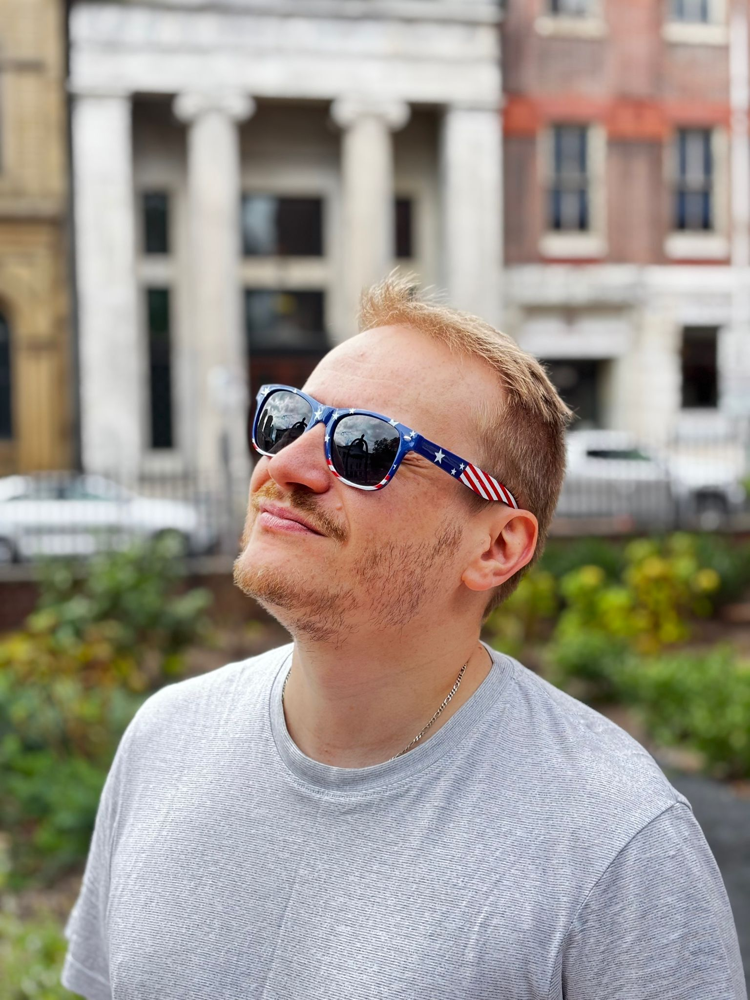

<!DOCTYPE html>
<html lang="en">
<head>
    <meta charset="utf-8" />
    <meta name="viewport" content="width=device-width, initial-scale=1.0, maximum-scale=1.0, user-scalable=no" />

    <title></title>
    <link rel="stylesheet" href="dist/reset.css">
    <link rel="stylesheet" href="dist/reveal.css" />
    <link rel="stylesheet" href="css/slides-extended.css" />
    <link rel="stylesheet" href="dist/theme/blood.css" id="theme" />
    <link rel="stylesheet" href="plugin/highlight/zenburn.css" />
    <link rel="stylesheet" href="plugin/customcontrols/style.css">


    <script defer src="dist/fontawesome/all.min.js"></script>

    <script type="text/javascript">
        function pageInIframe() {
            return (window.location !== window.parent.location);
        }

        let forgetPop = true;
        function onPopState(event) {
            if(forgetPop){
                forgetPop = false;
            } else if( pageInIframe()) {
                parent.postMessage(event.target.location.href, "app://obsidian.md");
            }
        }
        window.onpopstate = onPopState;
        window.onmessage = event => {
            if(event.data == "reload"){
                window.document.location.reload();
            }
            forgetPop = true;
        }

        function fitElements() {
            const itemsToFit = document.getElementsByClassName('fitText');
            for (const item in itemsToFit) {
                if (Object.hasOwnProperty.call(itemsToFit, item)) {
                    const element = itemsToFit[item];
                    fitElement(element, 1, 1000);
                    element.classList.remove('fitText');
                }
            }
        }

        function fitElement(element, start, end) {

            let size = (end + start) / 2;
            element.style.fontSize = `${size}px`;

            if (Math.abs(start - end) < 1) {
                while (element.scrollHeight > element.offsetHeight) {
                    size--;
                    element.style.fontSize = `${size}px`;
                }
                return;
            }

            if (element.scrollHeight > element.offsetHeight) {
                fitElement(element, start, size);
            } else {
                fitElement(element, size, end);
            }
        }


        document.onreadystatechange = () => {
            fitElements();
            if (document.readyState === 'complete') {
                if (pageInIframe() && window.location.href.indexOf("?export") != -1){
                    parent.postMessage(event.target.location.href, "app://obsidian.md");
                }
                if (window.location.href.indexOf("print-pdf") != -1){
                    let stateCheck = setInterval(() => {
                        clearInterval(stateCheck);
                        window.print();
                    }, 250);
                }
            }
        };
    </script>
</head>

<body>
    <div class="reveal">
        <div class="slides"><section  data-markdown><script type="text/template"><!-- .slide: class="drop" template="" -->
<div class="" style="position: absolute; left: 0px; top: 0px; height: 768px; width: 1366px; min-height: 768px; display: flex; flex-direction: column; align-items: center; justify-content: center" absolute="true">


</div></script></section><section  data-markdown><script type="text/template"><!-- .slide: class="drop" template="" -->
<div class="" style="position: absolute; left: 0px; top: 0px; height: 768px; width: 1366px; min-height: 768px; display: flex; flex-direction: column; align-items: center; justify-content: center" absolute="true">

### Najbliższe wydarzenia

- **6 lutego** - Kolektyw Gliwice
- **20 lutego** - KraQA
- **12 marca** - BiałQA
- **4-5 kwitnia** - Warszawskie Dni Informatyki (CFP do 3 lutego)
- **7-8 kwietnia** - TADA, czyli byłe ConSelenium (CFP do 2 lutego)
- **25 maja** - test:fest (CFP do 28 lutego)
- **29-30 maja** - Automatyzacja Testowania w praktyce
- **5-7 listopada** - TestWarez w Wiśle (CFP od 14 lutego)
</div></script></section><section  data-markdown><script type="text/template"><!-- .slide: class="drop" template="" -->
<div class="" style="position: absolute; left: 0px; top: 0px; height: 768px; width: 1366px; min-height: 768px; display: flex; flex-direction: column; align-items: center; justify-content: center" absolute="true">

### Inne wydarzenia

- 3QA
- test:fest meetup
- ŁuczniczQA
- Warsaw Testers Forum
- ImproveIT
- Test Dive Conference
</div></script></section><section  data-markdown><script type="text/template"><!-- .slide: class="drop" template="" -->
<div class="" style="position: absolute; left: 0px; top: 0px; height: 768px; width: 1366px; min-height: 768px; display: flex; flex-direction: column; align-items: center; justify-content: center" absolute="true">

# Prelegenci
</div></script></section><section  data-markdown><script type="text/template"><!-- .slide: class="drop" template="" -->
<div class="" style="position: absolute; left: 0px; top: 0px; height: 768px; width: 1366px; min-height: 768px; display: flex; flex-direction: column; align-items: center; justify-content: center" absolute="true">

<div class="" style="position: absolute; left: 0%; top: 0%; height: 10%; width: 100%; display: flex; flex-direction: column; align-items: center; justify-content: center" >

### Jakub Spórna
</div>

<div class="" style="position: absolute; left: 0%; top: 10%; height: 90%; width: 30%; display: flex; flex-direction: column; align-items: center; justify-content: center" >



</div>

<div class="" style="position: absolute; left: 30%; top: 10%; height: 90%; width: 70%; display: flex; flex-direction: column; align-items: center; justify-content: space-evenly" align="justify">

DevOps czyli Skrypt Developer + Ninja Infrastruktury.  Wykarmiony przez smoka wawelskiego, niedoszła Pyra, Ślązak z importu. Na świat patrzy przez terminal a konsoli używa do gier. Czyta SciFi i dokumentację - ten sam poziom abstrakcji.
</div>
</div></script></section><section  data-markdown><script type="text/template"><!-- .slide: class="drop" template="" -->
<div class="" style="position: absolute; left: 0px; top: 0px; height: 768px; width: 1366px; min-height: 768px; display: flex; flex-direction: column; align-items: center; justify-content: center" absolute="true">

<div class="" style="position: absolute; left: 0%; top: 0%; height: 10%; width: 100%; display: flex; flex-direction: column; align-items: center; justify-content: center" >

### Dawid Pacia
</div>

<div class="" style="position: absolute; left: 0%; top: 10%; height: 90%; width: 30%; display: flex; flex-direction: column; align-items: center; justify-content: center" >



</div>

<div class="" style="position: absolute; left: 30%; top: 10%; height: 90%; width: 70%; display: flex; flex-direction: column; align-items: center; justify-content: space-evenly" align="justify">

QA i Test Automation Manager, a także mentor i trener. Pasjonat technologii śledzący najnowsze rozwiązania (i wdrażający je samodzielnie). <br>Zwolennik podejścia Agile w zarządzaniu projektami i produktami. Aktywnie występuje i podróżuje po świecie, dzieląc się wiedzą i doświadczeniem. Miłośnik kotów, kawy i whisky.
</div>
</div></script></section></div>
    </div>

    <script src="dist/reveal.js"></script>
    <script src="plugin/notes/notes.js"></script>
    <script src="plugin/markdown/markdown.js"></script>
    <script src="plugin/highlight/highlight.js"></script>

    <script src="plugin/zoom/zoom.js"></script>
    <script src="plugin/math/math.js"></script>
    <script src="plugin/mermaid/mermaid.js"></script>
    <script src="plugin/chart/chart.umd.js"></script>
    <script src="plugin/chart/plugin.js"></script>
    <script src="plugin/customcontrols/plugin.js"></script>

    <script>
        function extend() {
            const target = {};
            for (let i = 0; i < arguments.length; i++) {
                const source = arguments[i];
                for (const key in source) {
                    if (source.hasOwnProperty(key)) {
                        target[key] = source[key];
                    }
                }
            }
            return target;
        }

        function isLight(color) {
            let hex = color.replace('#', '');

            // convert #fff => #ffffff
            if (hex.length == 3) {
                hex = `${hex[0]}${hex[0]}${hex[1]}${hex[1]}${hex[2]}${hex[2]}`;
            }

            const c_r = parseInt(hex.substr(0, 2), 16);
            const c_g = parseInt(hex.substr(2, 2), 16);
            const c_b = parseInt(hex.substr(4, 2), 16);
            const brightness = ((c_r * 299) + (c_g * 587) + (c_b * 114)) / 1000;
            return brightness > 155;
        }

        const bgColor = getComputedStyle(document.documentElement).getPropertyValue('--r-background-color').trim();

        if (isLight(bgColor)) {
            document.body.classList.add('has-light-background');
        } else {
            document.body.classList.add('has-dark-background');
        }

        // default options to init reveal.js
        const defaultOptions = {
            controls: true,
            progress: true,
            history: true,
            center: true,
            transition: 'default', // none/fade/slide/convex/concave/zoom
            plugins: [
                RevealMarkdown,
                RevealHighlight,
                RevealZoom,
                RevealNotes,
                RevealMath.MathJax3,
                RevealMermaid,
                RevealChart,
                RevealCustomControls,
            ],
            allottedTime: 120 * 1000,
            mathjax3: {
                mathjax: 'plugin/math/mathjax/tex-mml-chtml.js',
            },
            markdown: {
                gfm: true,
                mangle: true,
                pedantic: false,
                smartLists: false,
                smartypants: false,
            },
            mermaid: {
                theme: isLight ? 'default' : 'dark',
            },
            customcontrols: {
                controls: [
                ]
            },
        };

        if ( pageInIframe() ) {
            defaultOptions.scrollActivationWidth = 5;
        }

        // options from URL query string
        const queryOptions = Reveal().getQueryHash() || {};

        const options = extend(defaultOptions, {"controls":true,"progress":true,"slideNumber":true,"center":true,"transition":"slide","transitionSpeed":"default","width":1366,"height":768,"margin":0.04}, queryOptions);
    </script>

    <script>
      Reveal.initialize(options);
    </script>
</body>

<!-- created with Slides Extended -->
</html>
